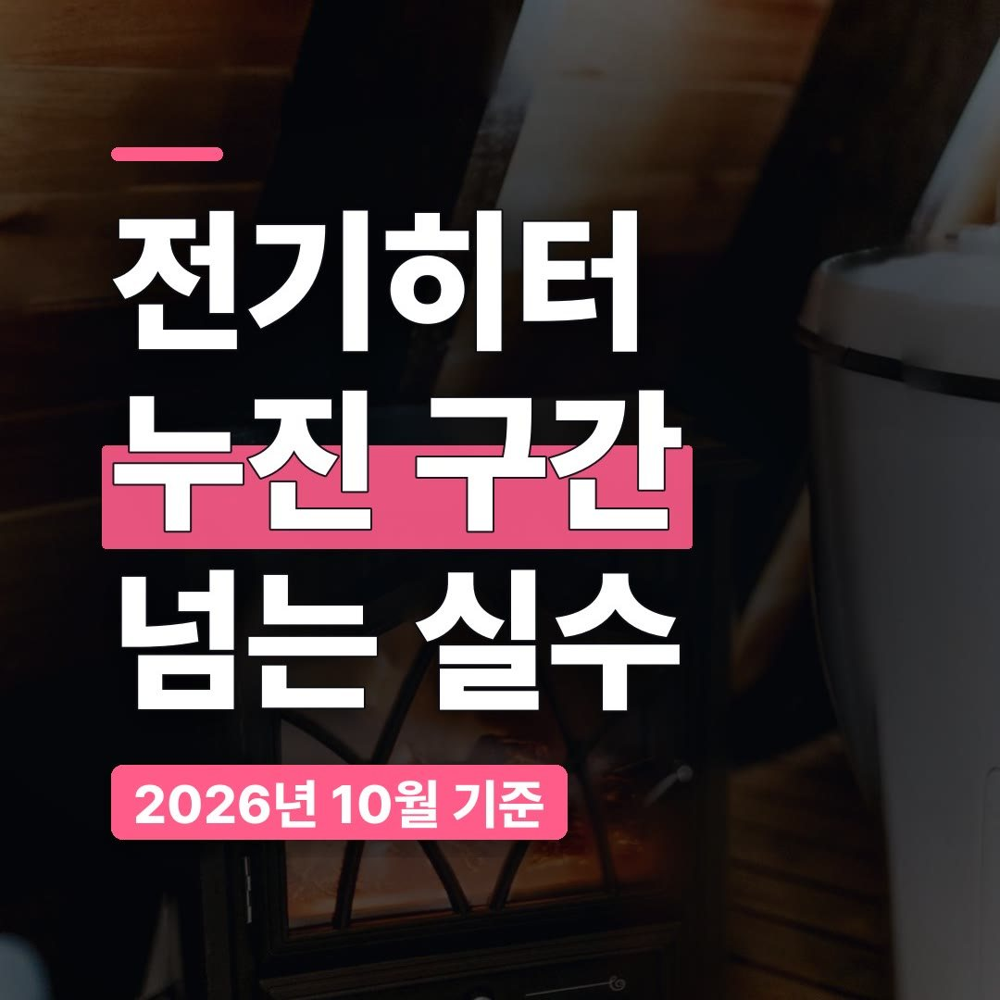
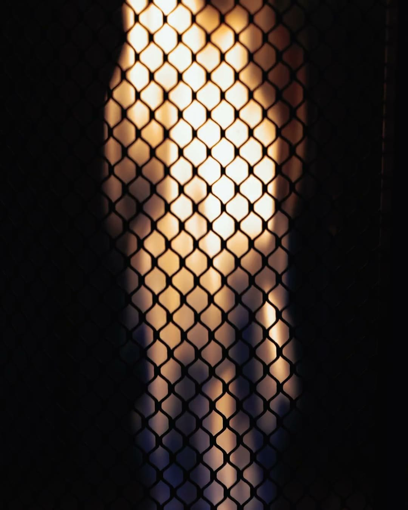
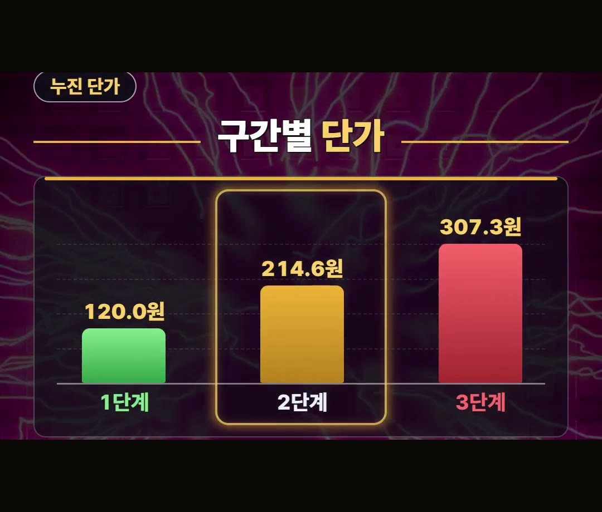
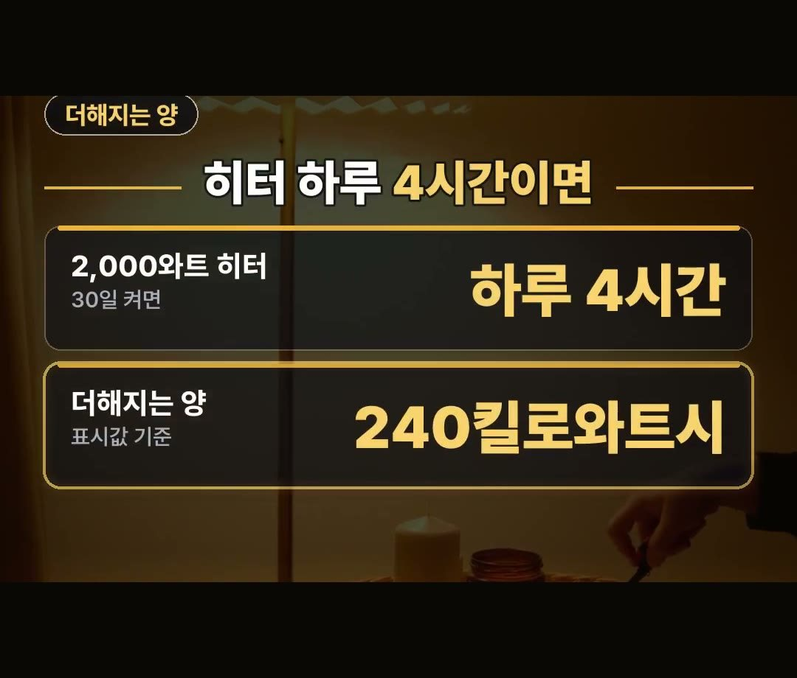
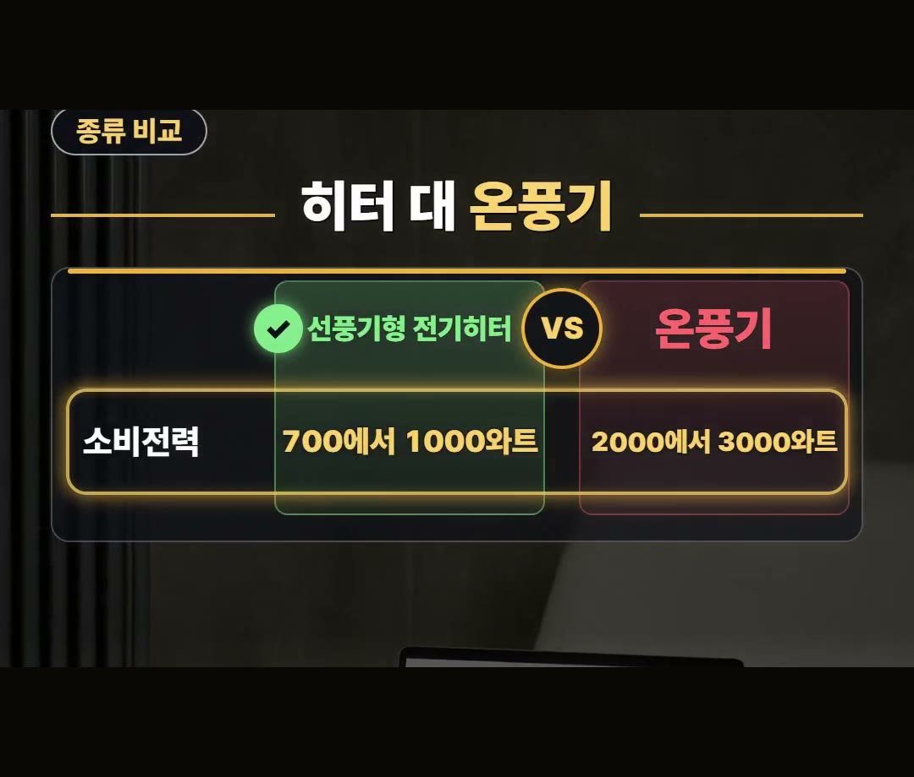
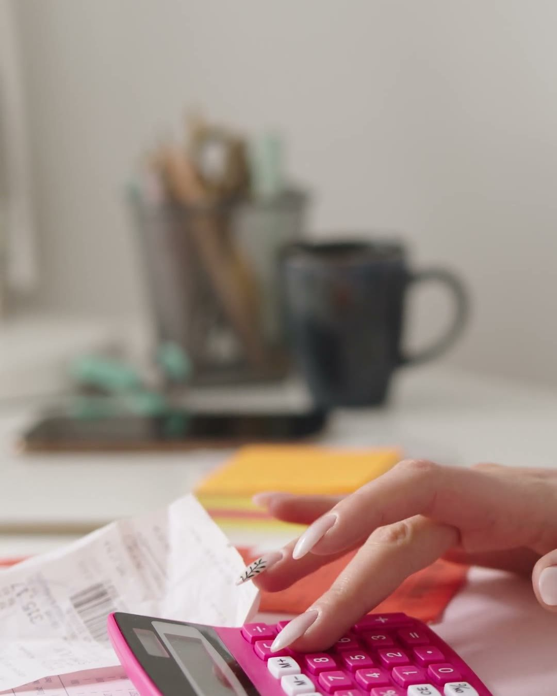

전기히터 전기세, 하루 4시간이면 누진 구간이 바뀌는 계산 정리
※ 이 글에는 제휴 링크가 포함되어 있으며, 링크를 통해 구매하시면 일정 수수료를 받을 수 있습니다. (가격은 같습니다)
※ 이 포스팅은 쿠팡 파트너스 활동의 일환으로, 이에 따른 일정액의 수수료를 제공받습니다.
전기히터 전기세가 걱정된다면 딱 3가지만 기억하면 됩니다.
누진 구간, 켜 두는 시간, 그리고 히터 종류예요.
이 글에서는 이 세 가지를 공개된 자료의 숫자와 함께 차례로 정리했습니다.
2,000와트 히터를 하루 4시간씩 30일 켜면 240킬로와트시가 더해진다는 것, 이것 하나만 기억하세요!
제품에 표시된 소비전력으로 계산한 값이라, 평소 쓰던 양 위에 그대로 얹힌다고 보면 돼요. 🔌

전기히터 전기세, 누진제부터 알아야 해요
전기요금은 쓸수록 단가가 오르는 누진제예요.
히터 전기세가 갑자기 커지는 이유도 여기에 있습니다.
히터를 오래 켜면 그만큼 쓴 양이 늘어나고, 쓴 양이 어느 선을 넘으면 그 위로는 더 비싼 단가가 붙어요.
그래서 같은 히터를 같은 시간 켜더라도, 우리 집이 지금 어느 구간에 있느냐에 따라 늘어나는 요금이 달라집니다.

구간별 단가 한눈에 보기
주택용 저압 기준으로, 한 달에 쓴 양에 따라 킬로와트시당 단가가 이렇게 나뉩니다.
- 200킬로와트시까지: 120.0원
- 400까지: 214.6원
- 400을 넘으면: 307.3원
구간이 오를수록 같은 양을 써도 더 비싼 값이 붙어요.
그래서 히터 전기세를 볼 때는 히터 한 대만 볼 게 아니라, 평소 우리 집이 한 달에 쓰는 양을 같이 봐야 합니다.
평소 사용량이 이미 높은 집일수록 히터를 켜는 순간 위 구간으로 넘어가기 쉬워요.

2,000와트 히터를 하루 4시간 켜면
2,000와트 히터를 하루 4시간씩 30일 켜면 240킬로와트시가 더해집니다.
제품에 표시된 소비전력을 기준으로 한 값이에요.
여기서 중요한 점은 이 240킬로와트시가 따로 계산되는 양이 아니라, 평소 쓰던 양 위에 얹히는 양이라는 거예요.
평소 사용량에 이만큼이 더해지면 구간이 올라가기 쉽습니다.
겨울에 전기요금이 생각보다 많이 나왔다면, 히터를 하루에 몇 시간 켰는지부터 떠올려 보세요.

전기히터 가정용, 종류마다 소비전력이 달라요
가정용으로 쓰는 히터도 종류에 따라 쓰는 전력이 다릅니다.
2011년 정부 자료를 보면 이렇게 나와 있어요.
- 선풍기형 전기히터: 700에서 1000와트
- 온풍기: 2000에서 3000와트
같은 해 에너지관리공단 실험에서는 3000와트 온풍기를 하루 5시간 쓰니 한 달 33만 원이 나왔다고 합니다.
2011년 실험이라 지금 요금과 그대로 견줄 수는 없지만, 소비전력이 큰 기기를 오래 켜 두면 요금이 얼마나 커질 수 있는지 보여 주는 숫자예요.
전기히터 가정용 제품을 볼 때 종류와 소비전력 표시를 먼저 보는 이유가 여기에 있습니다.

소비전력 표시와 켜 두는 시간
살 때는 히터에 표시된 소비전력부터 보세요.
같은 시간을 켜도 소비전력이 크면 더해지는 양이 커져요.
그래서 전기히터 전기세를 줄이는 첫걸음은 켜 두는 시간부터 줄이는 거예요.
고를 때 볼 점을 우리 말로 정리하면 이렇습니다.
- 우리 집 평소 사용량이 어느 구간인지
- 히터에 표시된 소비전력이 얼마인지
- 하루에 몇 시간 켜 둘 생각인지

정리
- 전기요금은 쓸수록 단가가 오르는 누진제예요 (주택용 저압 기준 120.0원, 214.6원, 307.3원).
- 2,000와트 히터를 하루 4시간씩 30일 켜면 240킬로와트시가 더해져요 (표시값 기준).
- 종류마다 소비전력이 달라요(2011년 정부 자료). 살 때는 소비전력 표시, 쓸 때는 켜 두는 시간부터 보세요.
링크는 아래에 모아 두었어요.
📌 2026년 10월 기준 정보예요. 가격은 시기에 따라 달라질 수 있어요.
사진·영상: Pexels (Alexander Mass, Athena Sandrini, Bilakis, Burak Evlivan, Damir K, IslandHopper X)